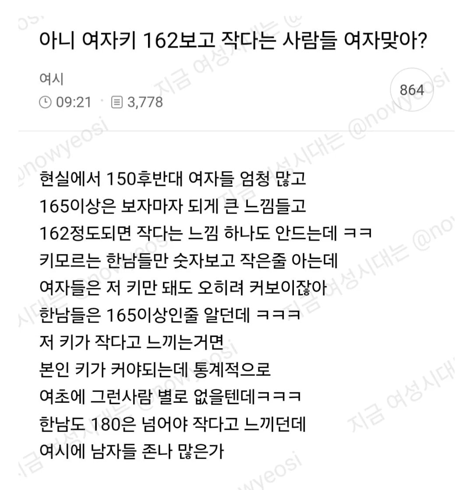
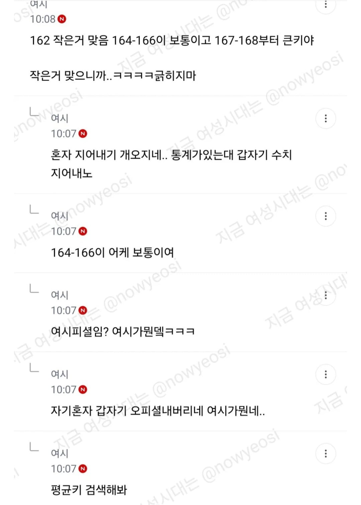
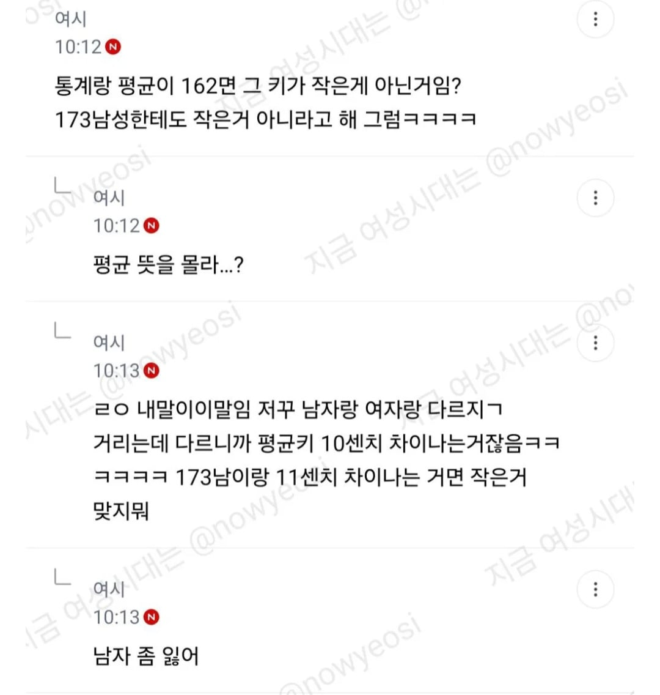

평균이면 말 그대로 평균인데 인식은 작다고 느끼는게 맞짆아?
수능5등급 공부 잘한다고 생각하는 사람 있냐 못한다고 생각하는게 많지
남재키 173 대입하면 답 나옴
국평오 비유 합격
와 저 미친년들 돌았나 하면서 내렸다가 이거 보고 납득함ㅋㅋㅋ 비유 적절하다ㅋㅋ
180 이하 루저라는 희대의 망언도 있는데 여자 162면 작다고 보는게 맞지
162 ㅅㅂ 만나본적도 없는 킨데
커서?
ㅋㅋㅋㅋㅋㅋ
162면 평균 인데 뭔가 남자 평균과 다르게 키큰 여자들이 평균을 끌어올린 느낌임 ㅋㅋㅋ
남자좀 잃어 ㅜㅜ
여자키로는 작은건아니고 보통정도 될거같은데
160후반정도면 약간큰정도고
작은거맞음
평균키 = 수능5등급
왜냐면 160이라는 계집들 되다 156 157 이런 똥자루리서 크다고 느끼능거임
13임